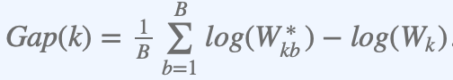

Identifying optimal number of clusters
Abhilash Kannan
01/03/2020
Determining the optimal number of clusters in a data set is a fundamental issue in partitioning clustering, such as k-means clustering, which requires the user to specify the number of clusters k to be generated.
Unfortunately, there is no definitive answer to this question. The optimal number of clusters is somehow subjective and depends on the method used for measuring similarities, correlations and the parameters used for partitioning. A simple and popular solution consists of inspecting the dendrogram produced using hierarchical clustering to see if it suggests a particular number of clusters. Unfortunately, this approach is also subjective.
In this section, we can inspect different methods for determining the optimal number of clusters for k-means, k-medoids (PAM) and hierarchical clustering.
These methods include direct methods and statistical testing methods:
1) Direct methods: consists of optimizing a criterion, such as the within cluster sums of squares or the average silhouette. The corresponding methods are named elbow and silhouette methods, respectively.
2) Statistical testing methods: consists of comparing evidence against null hypothesis. An example is the gap statistic.
In addition to elbow, silhouette and gap statistic methods, there are more than thirty other indices and methods that have been published for identifying the optimal number of clusters. Below, I provide codes for computing all these 30 indices in order to decide the best number of clusters using the “majority rule”.
For each of these methods:
- I describe the basic idea and the algorithm
- I provide easy-o-use R codes with many examples for determining the optimal number of clusters and visualizing the output.
1.1) Elbow method
Recall that, the basic idea behind partitioning methods, such as k-means clustering, is to define clusters such that the total intra-cluster variation [or total within-cluster sum of square (WSS)] is minimized. The total WSS measures the compactness of the clustering and we want it to be as small as possible.
The Elbow method looks at the total WSS as a function of the number of clusters: One should choose a number of clusters so that adding another cluster doesn’t improve much better the total WSS.
The optimal number of clusters can be defined as follows:
Compute clustering algorithm (e.g., k-means clustering) for different values of k. For instance, by varying k from 1 to 10 clusters.
For each k, calculate the total within-cluster sum of square (wss).
Plot the curve of wss according to the number of clusters k.
The location of a bend (knee) in the plot is generally considered as an indicator of the appropriate number of clusters.
Note that, the elbow method is sometimes ambiguous. An alternative is the average silhouette method (Kaufman and Rousseeuw,1990) which can be also used with any clustering approach.
1.2)Average silhouette method
The average silhouette approach we’ll be described comprehensively in the chapter cluster validation statistics. Briefly, it measures the quality of a clustering. That is, it determines how well each object lies within its cluster. A high average silhouette width indicates a good clustering.
Average silhouette method computes the average silhouette of observations for different values of k. The optimal number of clusters k is the one that maximize the average silhouette over a range of possible values for k (Kaufman and Rousseeuw 1990).
The algorithm is similar to the elbow method and can be computed as follows:
Compute clustering algorithm (e.g., k-means clustering) for different values of k. For instance, by varying k from 1 to 10 clusters.
For each k, calculate the average silhouette of observations (avg.sil).
Plot the curve of avg.sil according to the number of clusters k.
The location of the maximum is considered as the appropriate number of clusters.
1.3) Gap statistic method
The gap statistic has been published by R. Tibshirani, G. Walther, and T. Hastie (Standford University, 2001). The approach can be applied to any clustering method.
The gap statistic compares the total within intra-cluster variation for different values of k with their expected values under null reference distribution of the data. The estimate of the optimal clusters will be value that maximize the gap statistic (i.e, that yields the largest gap statistic). This means that the clustering structure is far away from the random uniform distribution of points.
The algorithm works as follows:
Cluster the observed data, varying the number of clusters from k = 1, …, kmax, and compute the corresponding total within intra-cluster variation Wk.
Generate B reference data sets with a random uniform distribution. Cluster each of these reference data sets with varying number of clusters k = 1, …, kmax, and compute the corresponding total within intra-cluster variation Wkb.
Compute the estimated gap statistic as the deviation of the observed Wk value from its expected value Wkb under the null hypothesis:
 Compute also the standard deviation of the statistics.
- Choose the number of clusters as the smallest value of k such that the gap statistic is within one standard deviation of the gap at k+1: Gap(k)≥Gap(k+1)−sk+1.
Note that, using B = 500 gives quite precise results so that the gap plot is basically unchanged after an another run.
2) Computing the number of clusters
In this section, we’ll describe two functions for determining the optimal number of clusters:
i) fviz_nbclust() function [in factoextra R package]: It can be used to compute the three different methods [elbow, silhouette and gap statistic] for any partitioning clustering methods [K-means, K-medoids (PAM), CLARA, HCUT]. Note that the hcut() function is available only in factoextra package.It computes hierarchical clustering and cut the tree in k pre-specified clusters.
** ii) NbClust() function** [ in NbClust R package] (Charrad et al. 2014): It provides 30 indices for determining the relevant number of clusters and proposes to users the best clustering scheme from the different results obtained by varying all combinations of number of clusters, distance measures, and clustering methods. It can simultaneously computes all the indices and determine the number of clusters in a single function call.
2.1) Required packages
We’ll use the following packages:
factoextra to determine the optimal number clusters for a given clustering methods and for data visualization.
NbClust for computing about 30 methods at once, in order to find the optimal number of clusters.
To install and load the packages, type this:
# install the packages
#pkgs <- c("factoextra", "NbClust")
#install.packages(pkgs)
#load the packages
library(factoextra)
library(NbClust)2.2) Data preparation
We’ll use two data sets:
Gene expression data - df1 (log2FC of isolates vs SC5314 - 182 samples X 6217 genes from Monocultre and Coculture).
Gene expression data - df2 (log2FC of isolates in Monoculture vs Coculture).
set.seed(123)
#df1
logFC_isolatesvsSC5314 <- read.delim("/Users/Abhi/Desktop/Abhilash/study/Post-Doc/Lab_notebook/eQTL/Gene_expression_analysis/IsolatesvsSC5314/isolatesvsSC5314_LogFC_transpose.txt",
row.names="isolate",stringsAsFactors = FALSE)
#df2
logFC_Monovscoculture <- read.delim("/Users/Abhi/Desktop/Abhilash/study/Post-Doc/Lab_notebook/eQTL/Gene_expression_analysis/Isolates_conditions/Mono_coculture_isolates_LogFC_transpose.txt",
row.names="isolate_comp",stringsAsFactors = FALSE)The data sets look like this:
#df1
head(logFC_isolatesvsSC5314, 3)
#df2
head(logFC_Monovscoculture, 3)Check if there is any missing values, if found try to remove it.
#df1
df1 <- logFC_isolatesvsSC5314[,c(9:6225)]
df1 <- na.omit(df1)
#df2
df2 <- logFC_Monovscoculture[,c(7:6223)]
df2 <- na.omit(df2)we also don’t want the clustering algorithm to depend to an arbitrary variable unit, we start by scaling/standardizing the data using the R function scale():
#df1
df1_scaled <- scale(df1)
#df2
df2_scaled <- scale(df2)Defining Groups df1 and df2 dataset:
This is required for the cluster validation
# df1
#Groups for df1 based on SNP clades
group_df1_SNP <- factor(logFC_isolatesvsSC5314$CLADE_SNP_numeric, levels = unique(logFC_isolatesvsSC5314$CLADE_SNP_numeric))
group_df1_SNP
#Groups for df1 based on MLST clades
group_df1_MLST <- factor(logFC_isolatesvsSC5314$CLADE_MLST_numeric, levels = unique(logFC_isolatesvsSC5314$CLADE_MLST_numeric))
group_df1_MLST
#Groups for df1 based on site of infection
group_df1_site <- factor(logFC_isolatesvsSC5314$Site_numeric, levels = unique(logFC_isolatesvsSC5314$Site_numeric))
group_df1_site
#Groups for df1 based on culture type
group_df1_culture <- factor(logFC_isolatesvsSC5314$culture_type_numeric, levels = unique(logFC_isolatesvsSC5314$culture_type_numeric))
group_df1_culture
#df2
#Groups for df2 based on SNP clades
group_df2_SNP <- factor(logFC_Monovscoculture$CLADE_SNP_numeric, levels = unique(logFC_Monovscoculture$CLADE_SNP_numeric))
group_df2_SNP
#Groups for df2 based on MLST clades
group_df2_MLST <- factor(logFC_Monovscoculture$CLADE_MLST_numeric, levels = unique(logFC_Monovscoculture$CLADE_MLST_numeric))
group_df2_MLST
#Groups for df2 based on site of infection
group_df2_site <- factor(logFC_Monovscoculture$Site_Numeric, levels = unique(logFC_Monovscoculture$Site_Numeric))
group_df2_siteBefore using any of the statistical methods to compute the clusters we can calculate correlation based distances for both the data sets
Correlation-based distances are commonly used in gene expression data analysis. Correlation method can be either pearson, spearman or kendall.
Computing correlation based distances for df1 dataset
# Compute
library("factoextra")
dist.cor_df1 <- get_dist(df1_scaled, method = "pearson")
# Display a subset
round(as.matrix(dist.cor_df1)[1:3, 1:3], 1)## FP_CEC1289 FP_CEC1424 FP_CEC1427
## FP_CEC1289 0.0 0.8 1.1
## FP_CEC1424 0.8 0.0 1.1
## FP_CEC1427 1.1 1.1 0.0Computing correlation based distances for df2 dataset
# Compute
dist.cor_df2 <- get_dist(df2_scaled, method = "pearson")
# Display a subset
round(as.matrix(dist.cor_df2)[1:3, 1:3], 1)## FP_CEC1289vsTR_CEC1289 FP_CEC1424vsTR_CEC1424 FP_CEC1427vsTR_CEC1427
## FP_CEC1289vsTR_CEC1289 0.0 1 1.5
## FP_CEC1424vsTR_CEC1424 1.0 0 1.0
## FP_CEC1427vsTR_CEC1427 1.5 1 0.02.3) viz_nbclust() function: Elbow, Silhouhette and Gap statistic methods
The simplified format is as follow:
fviz_nbclust(x, FUNcluster, method = c(“silhouette”, “wss”, “gap_stat”))
x: numeric matrix or data frame
FUNcluster: a partitioning function. Allowed values include kmeans, pam, clara and hcut (for hierarchical clustering).
method: the method to be used for determining the optimal number of clusters.
The code below determine the optimal number of clusters for k-means clustering:
for df1:
** i) Elbow method **:
# Elbow method
fviz_nbclust(df1_scaled, kmeans, method = "wss",print.summary = TRUE,k.max = 25,nboot = 500,verbose = interactive(),linecolor = "steelblue", diss = dist.cor_df1, barfill = "steelblue",barcolor = "steelblue") +
geom_vline(xintercept = c(2,5), linetype = 2)+
labs(title = "Optimal number of clusters for df1 dataset",subtitle = "Elbow method")
plot depicting the idetification of optimal number of clusters for df1 dataset using elbow method
ii) Silhouette method:
# Silhouette method
fviz_nbclust(df1_scaled, kmeans, method = "silhouette",print.summary = TRUE,k.max = 25,nboot = 500,verbose = interactive(),linecolor = "steelblue", diss = dist.cor_df1, barfill = "steelblue",barcolor = "steelblue") +
labs(title = "Optimal number of clusters for df1 dataset",subtitle = "silhouette method")
plot depicting the idetification of optimal number of clusters for df1 dataset using Silhouette method
ii) Gap statistic method:
# Gap statistic
# nboot = 50 to keep the function speedy.
# recommended value: nboot= 500 for your analysis.
# Use verbose = FALSE to hide computing progression.
set.seed(123)
fviz_nbclust(df1_scaled, kmeans, method = "gap_stat",nstart = 25, print.summary = TRUE,k.max = 10,nboot = 50,verbose = interactive(),linecolor = "steelblue", diss = dist.cor_df1, barfill = "steelblue",barcolor = "steelblue")+
labs(title = "Optimal number of clusters for df1 dataset",subtitle = "Gap statistic method")## Clustering k = 1,2,..., K.max (= 10): .. done
## Bootstrapping, b = 1,2,..., B (= 50) [one "." per sample]:
## .................................................. 50
We do the same for df2 dataset:
** i) Elbow method **:
# Elbow method
fviz_nbclust(df2_scaled, kmeans, method = "wss",print.summary = TRUE,k.max = 25,nboot = 500,verbose = interactive(),linecolor = "steelblue", diss = dist.cor_df2, barfill = "steelblue",barcolor = "steelblue") +
geom_vline(xintercept = c(2,5), linetype = 2)+
labs(title = "Optimal number of clusters for df2 dataset",subtitle = "Elbow method")
plot depicting the idetification of optimal number of clusters for df2 dataset using elbow method
ii) Silhouette method:
# Silhouette method
fviz_nbclust(df2_scaled, kmeans, method = "silhouette",print.summary = TRUE,k.max = 25,nboot = 500,verbose = interactive(),linecolor = "steelblue", diss = dist.cor_df2, barfill = "steelblue",barcolor = "steelblue") +
labs(title = "Optimal number of clusters for df2 dataset",subtitle = "silhouette method")
plot depicting the idetification of optimal number of clusters for df2 dataset using Silhouette method
ii) Gap statistic method:
# Gap statistic
# nboot = 50 to keep the function speedy.
# recommended value: nboot= 500 for your analysis.
# Use verbose = FALSE to hide computing progression.
set.seed(123)
fviz_nbclust(df2_scaled, kmeans, method = "gap_stat",nstart = 25, print.summary = TRUE,k.max = 10,nboot = 50,verbose = interactive(),linecolor = "steelblue", diss = dist.cor_df2, barfill = "steelblue",barcolor = "steelblue")+
labs(title = "Optimal number of clusters for df2 dataset",subtitle = "Gap statistic method")## Clustering k = 1,2,..., K.max (= 10): .. done
## Bootstrapping, b = 1,2,..., B (= 50) [one "." per sample]:
## .................................................. 50 plot depicting the idetification of optimal number of clusters for df2 dataset using Gap statistic method
plot depicting the idetification of optimal number of clusters for df2 dataset using Gap statistic method
for df1:
Elbow method: 2 or 5 clusters solution suggested
Silhouette method: 2 clusters solution suggested
Gap statistic method: 7 clusters solution suggested
for df1:
Elbow method: 2 or 5 clusters solution suggested
Silhouette method: 3 clusters solution suggested
Gap statistic method: 8 clusters solution suggested
According to these observations, it’s possible to define k = 2 (minimum) and k = 8 (maximum) as the optimal number of clusters in the data.
Note: The disadvantage of elbow and average silhouette methods is that, they measure a global clustering characteristic only. A more sophisticated method is to use the gap statistic which provides a statistical procedure to formalize the elbow/silhouette heuristic in order to estimate the optimal number of clusters.
3) NbClust() function: 30 indices for choosing the best number of clusters (optional)
** Choosing all iindices did not work for me in this data. Ony using the Silhouette index worked well. Hence I decided to go with it.
The simplified format of the function NbClust() is:
NbClust(data = NULL, diss = NULL, distance = “euclidean”, min.nc = 2, max.nc = 15, method = NULL)
data: matrix
diss: dissimilarity matrix to be used. By default, diss=NULL, but if it is replaced by a dissimilarity matrix, distance should be “NULL”
distance: the distance measure to be used to compute the dissimilarity matrix. Possible values include “euclidean”, “manhattan” or “NULL”.
min.nc, max.nc: minimal and maximal number of clusters, respectively method: The cluster analysis method to be used including “ward.D”, “ward.D2”, “single”, “complete”, “average”, “kmeans” and more.
To compute NbClust() for kmeans, use method = “kmeans”.
To compute NbClust() for hierarchical clustering, method should be one of c(“ward.D”, “ward.D2”, “single”, “complete”, “average”).
NbClust for df1 dataset:
set.seed(123)
NbClust_df1_silhoutte = NbClust(data = df1_scaled, diss =dist.cor_df1, distance = NULL, min.nc = 2, max.nc = 10,
method = "ward.D2", index ="silhouette")
NbClust_df2_silhoutte = NbClust(data = df2_scaled, diss =dist.cor_df2, distance = NULL, min.nc = 2, max.nc = 10,
method = "ward.D2", index ="silhouette")NbClust_df1_silhoutte## $All.index
## 2 3 4 5 6 7 8 9 10
## 0.2064 0.1593 0.1586 0.1765 0.1721 0.1800 0.1833 0.1817 0.1738
##
## $Best.nc
## Number_clusters Value_Index
## 2.0000 0.2064
##
## $Best.partition
## FP_CEC1289 FP_CEC1424 FP_CEC1427 FP_CEC1492 FP_CEC2018 FP_CEC2021 FP_CEC2022
## 1 1 1 1 1 1 1
## FP_CEC2023 FP_CEC2872 FP_CEC2876 FP_CEC3494 FP_CEC3530 FP_CEC3531 FP_CEC3534
## 1 1 1 1 1 1 1
## FP_CEC3536 FP_CEC3537 FP_CEC3548 FP_CEC3549 FP_CEC3550 FP_CEC3551 FP_CEC3554
## 1 1 1 1 1 1 1
## FP_CEC3557 FP_CEC3558 FP_CEC3561 FP_CEC3600 FP_CEC3602 FP_CEC3607 FP_CEC3610
## 1 1 1 1 1 1 1
## FP_CEC3613 FP_CEC3615 FP_CEC3616 FP_CEC3618 FP_CEC3619 FP_CEC3621_1 FP_CEC3634
## 1 1 1 1 1 1 1
## FP_CEC3660 FP_CEC3664 FP_CEC3665 FP_CEC3668 FP_CEC3669 FP_CEC3671 FP_CEC3675
## 1 1 1 1 1 1 1
## FP_CEC3676 FP_CEC3679 FP_CEC3681 FP_CEC3685 FP_CEC3686 FP_CEC3704 FP_CEC3707
## 1 1 1 1 1 1 1
## FP_CEC3708 FP_CEC3711 FP_CEC3712 FP_CEC3715 FP_CEC4024 FP_CEC4035 FP_CEC4038
## 1 1 1 1 1 1 1
## FP_CEC4039 FP_CEC4104 FP_CEC4254 FP_CEC4256 FP_CEC4261 FP_CEC4479 FP_CEC4482
## 1 1 1 1 1 1 1
## FP_CEC4485 FP_CEC4486 FP_CEC4489 FP_CEC4492 FP_CEC4497 FP_CEC4498 FP_CEC4499
## 1 1 1 1 1 1 1
## FP_CEC4500 FP_CEC4502 FP_CEC4510 FP_CEC4512 FP_CEC4525 FP_CEC4660 FP_CEC4692
## 1 1 1 1 1 2 1
## FP_CEC4693 FP_CEC4943 FP_CEC4945 FP_CEC5020 FP_CEC5028 FP_CEC5029 FP_CEC5114
## 1 1 1 1 1 1 1
## FP_CEC5120 FP_CEC5132 FP_CEC5136 FP_CEC708 FP_CEC712 FP_CEC723 FP_G3
## 1 1 1 1 1 1 1
## TR_CEC1289 TR_CEC1424 TR_CEC1427 TR_CEC1492 TR_CEC2018 TR_CEC2021 TR_CEC2022
## 1 2 2 2 1 2 2
## TR_CEC2023 TR_CEC2872 TR_CEC2876 TR_CEC3494 TR_CEC3530 TR_CEC3531 TR_CEC3534
## 1 1 2 2 1 1 1
## TR_CEC3536 TR_CEC3537 TR_CEC3548 TR_CEC3549 TR_CEC3550 TR_CEC3551 TR_CEC3554
## 2 2 2 1 2 1 1
## TR_CEC3557 TR_CEC3558 TR_CEC3561 TR_CEC3600 TR_CEC3602 TR_CEC3607 TR_CEC3610
## 2 1 2 1 1 1 2
## TR_CEC3613 TR_CEC3615 TR_CEC3616 TR_CEC3618 TR_CEC3619 TR_CEC3621_1 TR_CEC3634
## 2 1 2 1 1 1 2
## TR_CEC3660 TR_CEC3664 TR_CEC3665 TR_CEC3668 TR_CEC3669 TR_CEC3671 TR_CEC3675
## 1 2 1 2 1 2 1
## TR_CEC3676 TR_CEC3679 TR_CEC3681 TR_CEC3685 TR_CEC3686 TR_CEC3704 TR_CEC3707
## 2 1 1 1 2 2 1
## TR_CEC3708 TR_CEC3711 TR_CEC3712 TR_CEC3715 TR_CEC4024 TR_CEC4035 TR_CEC4038
## 1 2 2 1 1 1 2
## TR_CEC4039 TR_CEC4104 TR_CEC4254 TR_CEC4256 TR_CEC4261 TR_CEC4479 TR_CEC4482
## 1 1 1 2 2 1 1
## TR_CEC4485 TR_CEC4486 TR_CEC4489 TR_CEC4492 TR_CEC4497 TR_CEC4498 TR_CEC4499
## 2 1 1 1 1 1 1
## TR_CEC4500 TR_CEC4502 TR_CEC4510 TR_CEC4512 TR_CEC4525 TR_CEC4660 TR_CEC4692
## 2 2 1 2 2 2 1
## TR_CEC4693 TR_CEC4943 TR_CEC4945 TR_CEC5020 TR_CEC5028 TR_CEC5029 TR_CEC5114
## 2 1 2 1 1 1 1
## TR_CEC5120 TR_CEC5132 TR_CEC5136 TR_CEC708 TR_CEC712 TR_CEC723 TR_G3
## 1 2 1 1 1 2 1NbClust_df2_silhoutte## $All.index
## 2 3 4 5 6 7 8 9 10
## 0.2436 0.2489 0.2720 0.2508 0.2390 0.2114 0.2049 0.1750 0.1624
##
## $Best.nc
## Number_clusters Value_Index
## 4.000 0.272
##
## $Best.partition
## FP_CEC1289vsTR_CEC1289 FP_CEC1424vsTR_CEC1424 FP_CEC1427vsTR_CEC1427
## 1 2 3
## FP_CEC1492vsTR_CEC1492 FP_CEC2018vsTR_CEC2018 FP_CEC2021vsTR_CEC2021
## 2 1 2
## FP_CEC2022vsTR_CEC2022 FP_CEC2023vsTR_CEC2023 FP_CEC2872vsTR_CEC2872
## 2 1 2
## FP_CEC2876vsTR_CEC2876 FP_CEC3494vsTR_CEC3494 FP_CEC3530vsTR_CEC3530
## 4 2 3
## FP_CEC3531vsTR_CEC3531 FP_CEC3534vsTR_CEC3534 FP_CEC3536vsTR_CEC3536
## 1 1 2
## FP_CEC3537vsTR_CEC3537 FP_CEC3548vsTR_CEC3548 FP_CEC3549vsTR_CEC3549
## 4 4 3
## FP_CEC3550vsTR_CEC3550 FP_CEC3551vsTR_CEC3551 FP_CEC3554vsTR_CEC3554
## 2 2 1
## FP_CEC3557vsTR_CEC3557 FP_CEC3558vsTR_CEC3558 FP_CEC3561vsTR_CEC3561
## 4 1 2
## FP_CEC3600vsTR_CEC3600 FP_CEC3602vsTR_CEC3602 FP_CEC3607vsTR_CEC3607
## 4 2 1
## FP_CEC3610vsTR_CEC3610 FP_CEC3613vsTR_CEC3613 FP_CEC3615vsTR_CEC3615
## 3 2 3
## FP_CEC3616vsTR_CEC3616 FP_CEC3618vsTR_CEC3618 FP_CEC3619vsTR_CEC3619
## 2 1 1
## FP_CEC3621_1vsTR_CEC3621_1 FP_CEC3634vsTR_CEC3634 FP_CEC3660vsTR_CEC3660
## 1 3 2
## FP_CEC3664vsTR_CEC3664 FP_CEC3665vsTR_CEC3665 FP_CEC3668vsTR_CEC3668
## 3 4 3
## FP_CEC3669vsTR_CEC3669 FP_CEC3671vsTR_CEC3671 FP_CEC3675vsTR_CEC3675
## 3 4 4
## FP_CEC3676vsTR_CEC3676 FP_CEC3679vsTR_CEC3679 FP_CEC3681vsTR_CEC3681
## 4 3 3
## FP_CEC3685vsTR_CEC3685 FP_CEC3686vsTR_CEC3686 FP_CEC3704vsTR_CEC3704
## 1 3 4
## FP_CEC3707vsTR_CEC3707 FP_CEC3708vsTR_CEC3708 FP_CEC3711vsTR_CEC3711
## 1 1 3
## FP_CEC3712vsTR_CEC3712 FP_CEC3715vsTR_CEC3715 FP_CEC4024vsTR_CEC4024
## 2 3 1
## FP_CEC4035vsTR_CEC4035 FP_CEC4038vsTR_CEC4038 FP_CEC4039vsTR_CEC4039
## 1 3 1
## FP_CEC4104vsTR_CEC4104 FP_CEC4254vsTR_CEC4254 FP_CEC4256vsTR_CEC4256
## 2 1 2
## FP_CEC4261vsTR_CEC4261 FP_CEC4479vsTR_CEC4479 FP_CEC4482vsTR_CEC4482
## 2 4 2
## FP_CEC4485vsTR_CEC4485 FP_CEC4486vsTR_CEC4486 FP_CEC4489vsTR_CEC4489
## 3 1 3
## FP_CEC4492vsTR_CEC4492 FP_CEC4497vsTR_CEC4497 FP_CEC4498vsTR_CEC4498
## 1 3 1
## FP_CEC4499vsTR_CEC4499 FP_CEC4500vsTR_CEC4500 FP_CEC4502vsTR_CEC4502
## 1 2 4
## FP_CEC4510vsTR_CEC4510 FP_CEC4512vsTR_CEC4512 FP_CEC4525vsTR_CEC4525
## 3 4 2
## FP_CEC4660vsTR_CEC4660 FP_CEC4692vsTR_CEC4692 FP_CEC4693vsTR_CEC4693
## 1 1 4
## FP_CEC4943vsTR_CEC4943 FP_CEC4945vsTR_CEC4945 FP_CEC5020vsTR_CEC5020
## 3 4 1
## FP_CEC5028vsTR_CEC5028 FP_CEC5029vsTR_CEC5029 FP_CEC5114vsTR_CEC5114
## 1 1 2
## FP_CEC5120vsTR_CEC5120 FP_CEC5132vsTR_CEC5132 FP_CEC5136vsTR_CEC5136
## 1 3 3
## FP_CEC708vsTR_CEC708 FP_CEC712vsTR_CEC712 FP_CEC723vsTR_CEC723
## 1 1 2
## FP_G3vsTR_G3 FP_SC5314vsTR_SC5314
## 3 1** based on all of the above methods it is most likely that best number of clusters for both the df1 dataset is 2 and df4 dataset is 4
4) Summary
In this section, we covered different methods for choosing the optimal number of clusters in a data set. These methods include the elbow, the silhouette and the gap statistic methods.
we showed how to compute these methods using the R function fviz_nbclust() [in factoextra R package]. Additionally, we described the package NbClust(), which can be used to compute simultaneously many other indices and methods for determining the number of clusters.
After choosing the number of clusters k, the next step is to perform partitioning clustering or heirachial chustering.
Copyright © 2020 Abhilash Kannan.